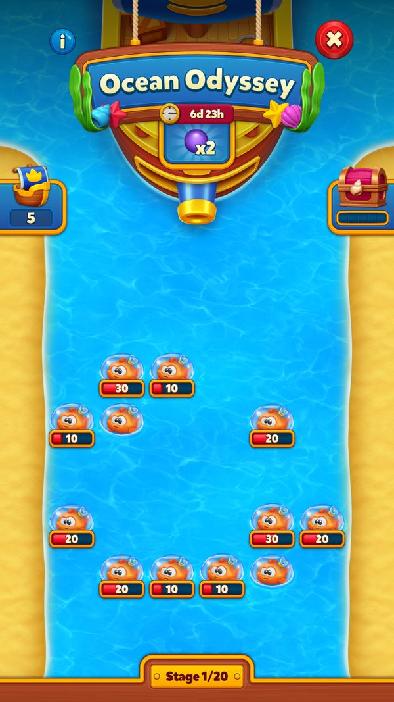
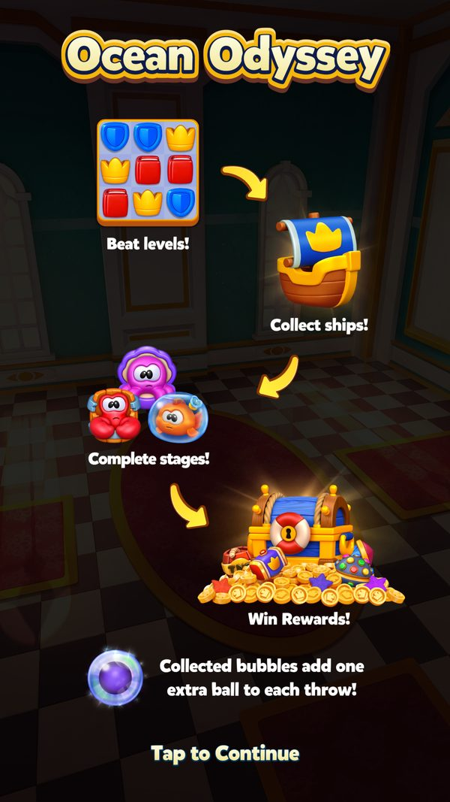
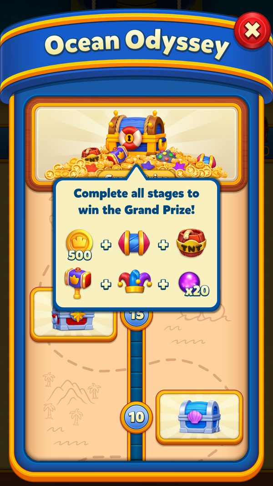
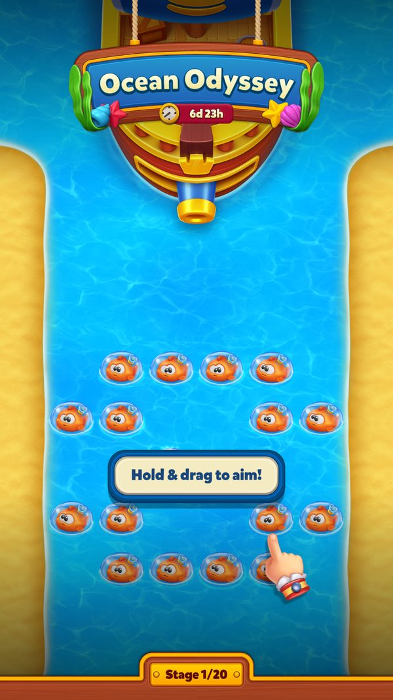
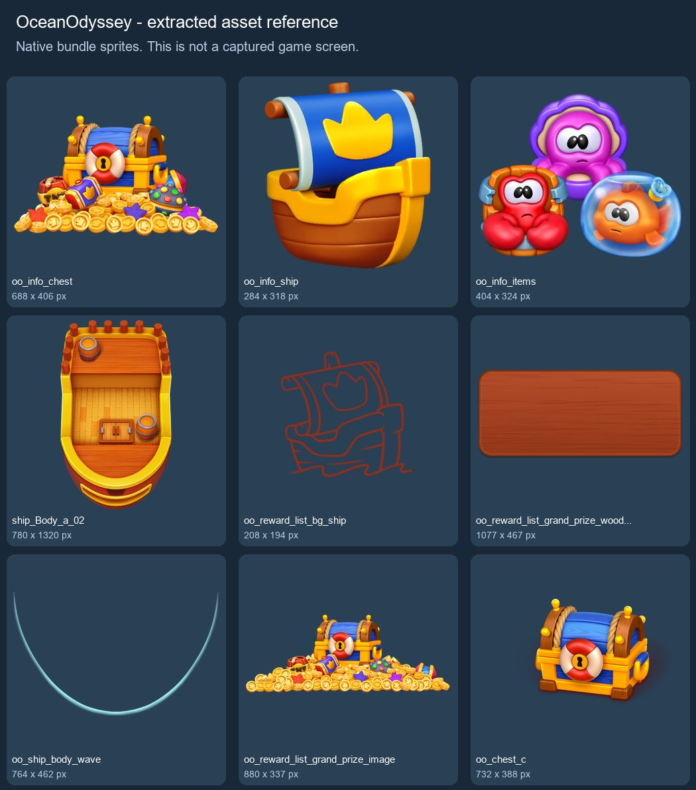

Hành trình đại dương (Ocean Odyssey)
Mini-game bắn súng thần: thắng level match-3 để gom đạn, rồi bắn phá vật cản trên biển qua 20 màn tới Grand Prize.
Mô tả
- Ocean Odyssey là sự kiện solo dạng mini-game bắn phá: người chơi dùng 'ocean ball' (đạn cannon) bắn vào các vật cản nổi trên biển thay vì chơi thêm bàn match-3 trong sự kiện.
- Đạn kiếm được bằng cách thắng level match-3 thường; mỗi lần thắng cộng một lượng đạn do bàn chơi quyết định, giữ tối đa 8000 đạn.
- Mỗi vật cản có máu riêng (tối đa 1023), chia 3 mức độ khó: thùng, khúc gỗ, cá, bạch tuộc, thuốc nổ biển, hộp bất ngờ, cua, cá mập và boss bạch tuộc Octo Boss 3 pha.
- Bắn liên tiếp đạt ngưỡng 3 hoặc 5 đạn (ballCountThresholds) sẽ tăng hệ số ném ThrowMultiplier, giúp phá vật nhanh hơn.
- Phá hết vật cản trong một màn thì lên màn kế tiếp; lộ trình mặc định 20 màn, nhóm A/B đặc biệt chơi 25 màn nhưng vẫn 5 mốc thưởng.
- Thưởng nằm ở 5 mốc (stage 4, 8, 12, 16 và màn cuối), hiển thị như các rương trên đảo thưởng trong danh sách phần thưởng.
- Hoàn thành màn cuối nhận Grand Prize gồm 1 bộ booster trong bàn, 1 bộ prelevel và 1000 Coins.
- Khi sự kiện sắp hết giờ, người chơi được nhắc dùng nốt đạn; đạn thừa được đổi thành thưởng hoặc chuyển sang sự kiện kế tiếp cùng nhóm.
- Màn chơi của sự kiện không nằm trong bản cài đặt mà tải riêng từ CDN, nên game chỉ mở sự kiện khi đã tải đủ toàn bộ màn và hiểu hết loại vật cản trong cấu hình.
Lưu ý
Tình trạng ảnh đã rà soát
Có ảnh màn hình
Gallery có ảnh game đã kiểm tra; số ảnh không biểu thị mọi trạng thái hoặc use case đã được chụp.
Rà soát ngày 08/10/2026. Xem bảng kiểm kê toàn wiki.
Ảnh chụp màn hình (4)
Ảnh runtime gồm bộ ép mở offline ngày 08/10/2026 ở Level 9999 và ảnh cũ (nếu có). Nguồn config, state thử và loại màn hình nằm trong caption từng ảnh. Bấm ảnh để phóng to, dùng phím ← → để chuyển ảnh.








Art event từ AssetBundle
Art gốc trích từ AssetBundle đã tải trên máy. Các bảng này là ảnh tham khảo asset, không xác nhận event đã mở hoặc phần thưởng đã nhận.


Mở khóa & điểm vào
OceanOdysseyManager.UnlockLevel = 86 (get_HasEnoughLevel / GetUnlockLevel). Cần: server có event đang chạy (OceanOdysseyInfo), bundle nhóm 'ocean_odyssey' đã tải (IsAllBundlesDownloaded), TẤT CẢ level trong config đã tải về từ CDN (IsAllLevelsInConfigDownloaded) và tất cả item trong level đã được client implement (IsAllItemsInConfigLevelsImplemented, nếu không thì log 'Item with id "{0}" is not implemented' và ShouldPreventEventWithUnimplementedItem = true), còn đủ thời gian (HasEnoughTimeToJoinEvent), không bị isDisabledByBackend ('Disable Ocean Odyssey: {0} from backend!').
Điểm vào:
- Icon Ocean Odyssey trên Home (OceanOdysseyIcon, IconState; bundle 'ocean_odyssey_icon')
- Start dialog tự động (TryAddStartDialog origin='flow')
- Dialog chính khi bấm icon (TryPushDialog, prefab 'OceanOdysseyDialog', bundle 'ocean_odyssey_dialog_v4')
- Claim dialog / last chance (TryAddClaimDialog)
- Deeplink 'oceanodyssey' (GetDeeplinkAction / TryAddDeeplinkDialog)
- Dialog đạn thừa cuối sự kiện (OceanOdysseyRemainingCannonsDialog)
- Dialog chuyển collectible sang sự kiện khác (RemainingCollectablesConversionManager)
- Nhiệm vụ Mission Control / Mission Pursuit kiểu OceanOdysseyStage (MissionType.OceanOdysseyStage = 40)
Cách hoạt động
- Server gửi thông tin event trong ping (OceanOdysseyInfo): eventId, ngày kết thúc, config và configVersion; client lưu ServerEventConfig/ServerEventConfigVersion rồi duyệt danh sách stage lấy levelId (UpdateInfo / CheckLevelsAndItemsInConfig).
- Client tải levels.txt và từng màn từ CDN https://contents.prod.rylmtch.com/ocean-odyssey-levels/, tối đa 3 lần thử mỗi file; level đánh dấu '*' là chưa upload (OceanOdysseyLevelDownloadHelper).
- Chỉ khi bundle 'ocean_odyssey' đã tải, mọi màn đã có sẵn và mọi item id đều được client hỗ trợ thì sự kiện mới sẵn sàng; nếu không, icon bị ẩn (get_IsAllItemsInConfigLevelsImplemented).
- Người chơi đạt Level 86 và còn đủ thời gian tham gia thì icon Ocean Odyssey xuất hiện trên Home (GetUnlockLevel = 86, HasEnoughTimeToJoinEvent).
- Vào event: client sao chép serverConfig sang userConfig, ghi EventId (bit 0..11), Stage (13..18), DifficultyIndex (43..44), nhóm AB butler multiplier (bit 65) và tăng EnteredEventCount (66..68) (TryEnterEvent).
- Lần đầu chơi, người chơi được tặng sẵn 6 đạn cho tutorial (StartCollectibleCountForTutorial = 6) và máu ban đầu của tối đa 60 vật được đặt theo itemsData[].healths[difficultyIndex] (bit IsMaxHealthSet = 35).
- Thắng mỗi level match-3, số đạn cộng vào CannonCount (bit 19..31, trần 8000); khi gom hơn 20 đạn kể từ lần mở dialog gần nhất, icon hiện chấm đỏ (WonLevel / get_ShouldShowIconNotification).
- Bấm icon để mở dialog chính (prefab 'OceanOdysseyDialog', bundle 'ocean_odyssey_dialog_v4') và bắt đầu bắn đạn vào vật cản trên biển (TryPushDialog).
- Mỗi phát trúng trừ máu của vật; máu còn lại của từng vật lưu 10 bit (tối đa 1023) trong dải bit 81..680, và bắn liên tiếp đạt ngưỡng [3, 5] đạn sẽ tăng hệ số ném (ThrowMultiplier bit 40..42). Game đếm riêng đạn đã dùng (45..51), đạn lãng phí (52..58) và đạn kiếm thêm (59..64).
- Boss Octo Boss đi qua 3 pha (Phase1/Phase2/Phase3), đầu boss 1000 máu và hai loại tay boss 100 máu; tay boss có thể được hồi đầy trở lại (bit 69).
- Phá hết vật trong màn -> Stage tăng, gửi OOStageComplete (oo_id, stage, stage_name, oceanball_used/left/multiplier/earned/wasted); nếu màn có thưởng thì hiện đảo thưởng và gửi OOClaim.
- Nhận thưởng ở 5 mốc của bảng 20 stage: stage 4 (1 R, 1 T), stage 8 (1 H, 15 ULV), stage 12 (1 A, 1 Ca), stage 16 (1 L, 1 J, 300 C) và stage 20 (1 IG, 1 PL, 1000 C); nhóm AB 25 stage nhận đúng 5 phần thưởng đó ở stage 5, 10, 15, 20, 25.
- Hoàn thành màn cuối (levelId 20001) nhận Grand Prize 1 IG, 1 PL, 1000 C kèm hoạt cảnh 'OceanOdysseyGrandPrizeClaimAnimation'; gửi OOFinish với finish_status = 1 (SendFinishAnalytics).
- Sắp hết giờ, cờ IsLastChance bật để nhắc dùng nốt đạn; hết giờ thì event bị vô hiệu hóa và gửi OOFinish với finish_status = 2 (ProceedToLastSession / LastSessionCompleted).
- Đạn thừa: mỗi 10 đạn đổi 1 phần thưởng (mặc định 1 T - TNT), tối đa 3 lần trong OceanOdysseyRemainingCannonsDialog; hoặc bật cờ bit 71 để chuyển toàn bộ đạn sang sự kiện kế tiếp cùng nhóm (RemainingCollectablesConversionManager).
Luồng chi tiết theo code
1) Ping trả OceanOdysseyInfo -> UpdateInfo(info) lưu ServerEventId/ServerEventEndDate/ServerEventConfig/ServerEventConfigVersion; ConfigHelper.UpdateServerConfig log 'UpdateServerConfig:{0} - Version:{1}'. 2) CheckLevelsAndItemsInConfig(canTryDownload): duyệt danh sách stages, mỗi stage có levelId; OceanOdysseyLevelDownloadHelper tải file level từ https://contents.prod.rylmtch.com/ocean-odyssey-levels/ (kèm levels.txt liệt kê level có sẵn, ký tự '*' đánh dấu level chưa upload), tối đa MaxLevelDownloadTryCount = 3 lần mỗi level và MaxDownloadTryForLevelInfo = 3 cho levels.txt. Nếu còn item chưa implement thì chặn vào event. 3) TryEnterEvent() khi CanJoinEvent, log 'Entered Event - ServerEventId: {0}'; ConfigHelper sao chép serverConfig sang userConfig (log 'UpdateUserConfig:{0} - Version:{1}'); ghi EventId (bit 0..11), IsEventValid (12), Stage (13..18), DifficultyIndex (43..44), IsButlerMultiplierAb (65), EnteredEventCount (66..68). Nếu đang tutorial thì tặng sẵn StartCollectibleCountForTutorial = 6 đạn. 4) Thắng level: WonLevel(collectableCount) cộng đạn (CannonCount bit 19..31, tối đa MaxCannonCount = 8000) và tăng 'CollectedCannonsAfterLastDialogOpen' (log 'Update LocalData - CollectedTokensAfterLastDialogOpen: {0}'); khi vượt CollectedCountForIconNotification = 20 thì icon có chấm đỏ. EnteredLevel() đặt cờ shouldCollectCannonFromLevel trong OceanOdysseyLevelData. 5) Mở dialog, người chơi bắn đạn vào vật. Máu mỗi vật lưu 10 bit (ItemHealthLength = 10, ItemMaxHealth = 1023) cho tối đa MaxItemCount = 60 vật, từ bit 81 đến 680. ballCountThresholds [3, 5] quyết định hệ số ném (ThrowMultiplier bit 40..42). Thống kê trong stage: UsedOceanBallCount (45..51), WastedOceanBallCount (52..58), EarnedOceanBallCount (59..64). 6) Phá hết vật trong stage -> OOStageComplete(oo_id, stage, stage_name, oceanball_used/left/multiplier/earned/wasted); stage có thưởng thì OOClaim. Stage cuối (20001) trả Grand Prize. 7) Hết giờ: IsLastChance -> ProceedToLastSession() (log '{0}: Invalidate event {1}!') rồi LastSessionCompleted(); SendFinishAnalytics(isCompleted, isQuit, oceanBallCountParameter, tntConversionCount) gửi OOFinish với finish_status = FinishStatusCompleted (1) / FinishStatusTimeFinished (2) / FinishStatusWarningQuit (3). 8) Đạn thừa: mỗi remainingCannonCountForReward = 10 đạn đổi 1 phần thưởng, tối đa MaxRemainingCannonsRewardCount = 3 (dialog OceanOdysseyRemainingCannonsDialog); hoặc SetShouldConvertCollectable(true) (log 'UpdateShouldConvertCollectable:{0}') để RemainingCollectablesConversionManager chuyển sang sự kiện kế tiếp cùng nhóm (icon 'rcc_collectable_ocean_odyssey', bundle 'remaining_collectables_conversion_dialog').
Phần thưởng
PHẦN THƯỞNG OCEAN ODYSSEY (20 STAGE MẶC ĐỊNH)
| Stage | Điều kiện (levelId) | Phần thưởng |
|---|---|---|
| Stage 1 | Phá hết vật trong màn 131 | Không có thưởng |
| Stage 2 | Phá hết vật trong màn 10001 | Không có thưởng |
| Stage 3 | Phá hết vật trong màn 30002 | Không có thưởng |
| Stage 4 (Rương 1) | Phá hết vật trong màn 20001 |  1Rocket 1Rocket  1TNT 1TNT |
| Stage 5 | Phá hết vật trong màn 20001 | Không có thưởng |
| Stage 6 | Phá hết vật trong màn 137 | Không có thưởng |
| Stage 7 | Phá hết vật trong màn 138 | Không có thưởng |
| Stage 8 (Rương 2) | Phá hết vật trong màn 140 |  1Royal Hammer 1Royal Hammer  ∞15 phútUnlimited Lives ∞15 phútUnlimited Lives |
| Stage 9 | Phá hết vật trong màn 141 | Không có thưởng |
| Stage 10 | Phá hết vật trong màn 142 | Không có thưởng |
| Stage 11 | Phá hết vật trong màn 143 | Không có thưởng |
| Stage 12 (Rương 3) | Phá hết vật trong màn 145 |  1Cannon 1Cannon |
| Stage 13 | Phá hết vật trong màn 146 | Không có thưởng |
| Stage 14 | Phá hết vật trong màn 147 | Không có thưởng |
| Stage 15 | Phá hết vật trong màn 148 | Không có thưởng |
| Stage 16 (Rương 4) | Phá hết vật trong màn 150 |  1Light Ball 1Light Ball  1Jester Hat 1Jester Hat  300Coin 300Coin |
| Stage 17 | Phá hết vật trong màn 151 | Không có thưởng |
| Stage 18 | Phá hết vật trong màn 152 | Không có thưởng |
| Stage 19 | Phá hết vật trong màn 153 | Không có thưởng |
| Stage 20 (Grand Prize) | Phá hết vật trong màn cuối 20001 | 1All in-game boosters 1Prelevel boosters 1000Coin |
PHẦN THƯỞNG NHÓM AB BUTLER MULTIPLIER (25 STAGE)
| Stage | Điều kiện (levelId) | Phần thưởng |
|---|---|---|
| Stage 1 | màn 131 | Không có thưởng |
| Stage 2 | màn 10001 | Không có thưởng |
| Stage 3 | màn 30002 | Không có thưởng |
| Stage 4 | màn 134 | Không có thưởng |
| Stage 5 (Rương 1) | màn 20001 | 1Rocket 1TNT |
| Stage 6 | màn 20001 | Không có thưởng |
| Stage 7 | màn 137 | Không có thưởng |
| Stage 8 | màn 138 | Không có thưởng |
| Stage 9 | màn 139 | Không có thưởng |
| Stage 10 (Rương 2) | màn 140 | 1Royal Hammer ∞15 phútUnlimited Lives |
| Stage 11 | màn 141 | Không có thưởng |
| Stage 12 | màn 142 | Không có thưởng |
| Stage 13 | màn 143 | Không có thưởng |
| Stage 14 | màn 144 | Không có thưởng |
| Stage 15 (Rương 3) | màn 145 | 1Cannon |
| Stage 16 | màn 146 | Không có thưởng |
| Stage 17 | màn 147 | Không có thưởng |
| Stage 18 | màn 148 | Không có thưởng |
| Stage 19 | màn 149 | Không có thưởng |
| Stage 20 (Rương 4) | màn 150 | 1Light Ball 1Jester Hat 300Coin |
| Stage 21 | màn 151 | Không có thưởng |
| Stage 22 | màn 152 | Không có thưởng |
| Stage 23 | màn 153 | Không có thưởng |
| Stage 24 | màn 154 | Không có thưởng |
| Stage 25 (Grand Prize) | màn cuối 20001 | 1All in-game boosters 1Prelevel boosters 1000Coin |
ĐỔI ĐẠN THỪA CUỐI SỰ KIỆN
| Lượt đổi | Điều kiện | Phần thưởng |
|---|---|---|
| Lượt 1 | 10 đạn thừa (remainingCannonCountForReward = 10) | 1TNT |
| Lượt 2 | 20 đạn thừa (cộng dồn) | 1TNT |
| Lượt 3 (tối đa) | 30 đạn thừa (cộng dồn, MaxRemainingCannonsRewardCount = 3) | 1TNT |
| Đạn còn lại | Bật cờ ShouldConvertCollectable (bit 71), AB RemainingCollectablesConversion | Chuyển thành collectible của sự kiện kế tiếp cùng nhóm (server) |
MÁU VẬT CẢN THEO ĐỘ KHÓ
| Vật cản (item id) | Máu theo 3 mức độ khó | Ghi chú |
|---|---|---|
| id 1 | 40 / 60 / 80 | - |
| id 2 | 100 / 150 / 200 | - |
| id 3 | 30 / 40 / 50 | Yếu nhất |
| id 4 | 60 / 80 / 100 | - |
| id 5 | 60 / 80 / 100 | - |
| id 6 | 40 / 60 / 80 | - |
| id 7 | 80 / 100 / 120 | - |
| id 9 | 100 / 150 / 200 | - |
| id 10 | 1000 / 1000 / 1000 | Octo Boss không đổi theo độ khó |
| id 11 | 100 / 100 / 100 | Tay boss (không móc) |
| id 12 | 100 / 100 / 100 | Tay boss có móc |
| id 13 | 60 / 80 / 100 | Cá mập |
Phần thưởng theo code
| Ngữ cảnh | Phần thưởng | Evidence |
|---|---|---|
| Stage 4 (index 3, levelId 20001) | 1Rocket 1TNT | ocean_odyssey_default_config.json stages[3].r |
| Stage 8 (index 7, levelId 140) | 1Royal Hammer ∞15 phútUnlimited Lives | ocean_odyssey_default_config.json stages[7].r |
| Stage 12 (index 11, levelId 145) | 1Cannon | ocean_odyssey_default_config.json stages[11].r |
| Stage 16 (index 15, levelId 150) | 1Light Ball 1Jester Hat 300Coin | ocean_odyssey_default_config.json stages[15].r |
| Stage cuối (index 19, levelId 20001) - Grand Prize | 1 ingame booster (IG) 1Prelevel boosters 1000 Coins | ocean_odyssey_default_config.json stages[19].r |
| Đạn thừa cuối sự kiện | Mỗi 10 đạn đổi 1 TNT tối đa 3 lần | OceanOdysseyConfigHelper.remainingTokenReward; OceanOdysseyManager.MaxRemainingCannonsRewardCount |
Số liệu chính
| Chỉ số | Giá trị | Nguồn |
|---|---|---|
| Mở khóa | Level 86 | OceanOdysseyManager.UnlockLevel / GetUnlockLevel |
| EventType | OceanOdyssey = 27 | OceanOdysseyManager.GetEventType |
| Ký hiệu event | OO | OceanOdysseyManager.EventInitial |
| Số stage mặc định | 20 stage | ocean_odyssey_default_config.json stages |
| Số stage nhóm AB butler multiplier | 25 stage | ocean_odyssey_default_config.json butlerMultiplierStages |
| Số mốc thưởng | 5 (stage 4, 8, 12, 16, 20) | stages[3/7/11/15/19].r |
| Đạn tối đa giữ được | 8000 | OceanOdysseyHelper.MaxCannonCount |
| Bit lưu số đạn | 13 bit (19..31) | OceanOdysseyProgress.CannonCountStart/End |
| Đạn tặng cho tutorial | 6 | OceanOdysseyManager.StartCollectibleCountForTutorial |
| Ngưỡng chấm đỏ icon | 20 đạn | OceanOdysseyManager.CollectedCountForIconNotification |
| Ngưỡng tăng hệ số ném | [3, 5] đạn | ocean_odyssey_default_config.json ballCountThresholds |
| Đạn đổi 1 phần thưởng | 10 | ocean_odyssey_default_config.json remainingCannonCountForReward |
| Số lần đổi đạn thừa tối đa | 3 | OceanOdysseyManager.MaxRemainingCannonsRewardCount |
| Số vật cản tối đa mỗi lần lưu | 60 | OceanOdysseyProgress.MaxItemCount |
| Máu tối đa 1 vật | 1023 (10 bit) | OceanOdysseyProgress.ItemMaxHealth / ItemHealthLength |
| Máu Octo Boss | 1000 (cả 3 độ khó) | itemsData[id=10].healths |
| Máu tay boss | 100 (id 11 và id 12) | itemsData[id=11].healths / itemsData[id=12].healths |
| Số pha của boss | 3 (Phase1=0, Phase2=1, Phase3=2) | OceanOdysseyOctoBossPhase |
| Tổng bit tiến độ | 681 bit | OceanOdysseyProgress.BitArrayLength |
| Bit lưu máu vật | 600 bit (81..680) | OceanOdysseyProgress.ItemsCurrentHealthStart/End |
| Số mức độ khó | 3 (DifficultyIndex 2 bit, 43..44) | OceanOdysseyProgress.DifficultyIndexStart/End |
| Số lần thử tải mỗi màn | 3 | OceanOdysseyLevelDownloadHelper.MaxLevelDownloadTryCount |
| Số pool prefab | 45 (None=0 .. SharkDivingParticles=44) | OceanOdysseyPoolId |
| Độ ưu tiên tutorial event | 225 | OceanOdysseyManager.get_EventTutorialPriority |
| MissionType stage OO | OceanOdysseyStage = 40 | OceanOdysseyStageTask / MissionType |
Ghi chú thiết kế
- Gom đạn rồi bắn cả loạt: bắn liên tiếp đạt ngưỡng 3 và 5 đạn sẽ nâng hệ số ném (ThrowMultiplier), nên đừng bắn lắt nhắt rồi bỏ dở.
- Đừng để CannonCount chạm trần 8000 — số đạn giữ được bị chặn ở mức này, nên tiêu bớt trước khi cày thêm level.
- Nếu không kịp về đích, hãy để dư ít nhất 10 đạn (hoặc 20/30) để đổi thưởng cuối sự kiện, vì mỗi 10 đạn đổi được 1 phần thưởng, tối đa 3 lần.
- Rương thưởng nằm ở stage 4, 8, 12, 16 và stage cuối 20 — các mốc cách nhau đều 4 stage, nên cứ 4 màn lại có một lần nhận thưởng.
- Nhóm AB butler multiplier đi 25 stage cho đúng 5 mốc thưởng đó (stage 5, 10, 15, 20, 25), tức mỗi chặng dài 5 stage thay vì 4 stage như bảng mặc định.
Use case (18)
Bấm vào từng use case để mở. Mở/đóng tất cả
UC-01 Nạp config và tiến độ khi khởi động
Các bước- Bind() -> LoadDataAndProgress() đọc OceanOdysseyData (tableItems) và OceanOdysseyProgress (BitArray 681 bit)
- OceanOdysseyConfigHelper..ctor gọi LoadServerConfig (log 'Load ServerConfig V:{0}' hoặc 'Load DefaultConfig to ServerConfig') và LoadUserConfig (log 'Load UserConfig V:{0}' hoặc 'LoadDefaultConfig to UserConfig'), đọc Resources/ocean_odyssey_default_config
- CacheRewardData() / GetCachedRewards() dựng Dictionary<int, RewardItem[]> thưởng theo stage
- IsMaxHealthSet (bit 35) đánh dấu đã đặt máu ban đầu cho 60 vật
- SceneWillLoad() chuẩn bị trước khi đổi scene
| Actor | System |
|---|---|
| Trigger | Bind / FillFromLocal |
| Điều kiện | - |
| Kết quả | config (stages, itemsData, ballCountThresholds) và tiến độ sẵn sàng |
| Quy tắc / số liệu | DefaultConfigName = 'ocean_odyssey_default_config' |
| Evidence | OceanOdysseyManager.Bind; OceanOdysseyManager.LoadDataAndProgress; OceanOdysseyConfigHelper.LoadServerConfig; OceanOdysseyConfigHelper.CacheRewardData |
UC-02 Tải màn chơi Ocean Odyssey từ CDN
Các bước- CheckLevelsAndItemsInConfig(canTryDownload) duyệt stages, lấy levelId
- OceanOdysseyLevelDownloadHelper tải 'levels.txt' (LevelInfoFileName) từ https://contents.prod.rylmtch.com/ocean-odyssey-levels/ để biết level nào có sẵn; ký tự '*' (NotUploadedLevelChar) đánh dấu level chưa upload
- Tải từng level tối đa MaxLevelDownloadTryCount = 3 lần; levelInfoDownloadTryCount tối đa MaxDownloadTryForLevelInfo = 3; NoInternetRetryDelay chờ khi mất mạng
- levelDownloadTrackerList theo dõi level đang tải; isAllLevelsDownloaded / IsAllLevelsInConfigDownloaded
- didSendExceptionForCorruptedLevelOnce chặn gửi lỗi trùng khi file hỏng
- DidTryDownloadingLevelInEnterEvent nhớ đã thử tải lúc vào event
| Actor | System |
|---|---|
| Trigger | Nhận config mới hoặc trước khi vào event |
| Điều kiện | - |
| Kết quả | Màn chơi OO có sẵn trên máy trước khi người chơi vào |
| Quy tắc / số liệu | Level lưu tại OceanOdysseyLevelSavePath; tên level có tiền tố 'OceanOdysseyLevel' (OceanOdysseyLevelPrefix) |
| Evidence | OceanOdysseyManager.CheckLevelsAndItemsInConfig; OceanOdysseyLevelDownloadHelper; OceanOdysseyManager.get_IsAllLevelsInConfigDownloaded |
UC-03 Chặn vào event khi có item chưa implement
Các bước- get_IsAllItemsInConfigLevelsImplemented duyệt itemsData và nội dung level
- Nếu thiếu: log 'Item with id "{0}" is not implemented' (didLogMissingLevelOnce chặn log trùng)
- ShouldPreventEventWithUnimplementedItem = true -> không vào event, icon ẩn
- configCheckAfterLevelDownloadCoroutine kiểm tra lại sau khi tải xong level
| Actor | System |
|---|---|
| Trigger | Config chứa item id mà client không biết |
| Điều kiện | - |
| Kết quả | Người chơi không bị kẹt trong màn chơi lỗi khi client cũ |
| Quy tắc / số liệu | - |
| Evidence | OceanOdysseyManager.CheckLevelsAndItemsInConfig; OceanOdysseyManager.get_IsAllItemsInConfigLevelsImplemented; OceanOdysseyManager.get_ShouldPreventEventWithUnimplementedItem |
UC-04 Vào sự kiện
Các bước- TryEnterEvent() / UnblockAndTryEnterEvent() log 'Entered Event - ServerEventId: {0}'
- ConfigHelper.UpdateUserConfig(newConfigVersion, newConfig) log 'UpdateUserConfig:{0} - Version:{1}'
- Ghi EventId (0..11), IsEventValid (12), Stage (13..18), DifficultyIndex (43..44), IsButlerMultiplierAb (65)
- EnteredEventCount (66..68) đếm số lần vào event
- Nếu chưa xem tutorial: tặng sẵn StartCollectibleCountForTutorial = 6 đạn
- IsMaxHealthSet (35) đặt máu ban đầu cho các vật theo itemsData[].healths[difficultyIndex]
| Actor | System |
|---|---|
| Trigger | EventDependency cho phép, đủ điều kiện |
| Điều kiện | CanJoinEvent, HasEnoughTimeToJoinEvent, level >= 86 |
| Kết quả | Người chơi bắt đầu từ stage 0 với 6 đạn (khi tutorial) |
| Quy tắc / số liệu | difficultyIndex chọn cột máu trong healths[3] (3 mức độ khó) |
| Evidence | OceanOdysseyManager.TryEnterEvent; OceanOdysseyManager.get_CanJoinEvent; OceanOdysseyManager.get_HasEnoughTimeToJoinEvent; OceanOdysseyProgress |
UC-05 Thắng level nhận đạn (ocean ball)
Các bước- EnteredLevel() đặt OceanOdysseyLevelData.shouldCollectCannonFromLevel = true
- WonLevel(collectableCount) cộng đạn vào CannonCount (bit 19..31), tối đa MaxCannonCount = 8000
- Log 'Update LocalData - CollectedTokensAfterLastDialogOpen: {0}' và tăng 'CollectedCannonsAfterLastDialogOpen'
- Khi collected > CollectedCountForIconNotification = 20 thì ShouldShowIconNotification = true (chấm đỏ)
- CanPlayIconCollectAnimation() chạy animation thu đạn lên icon; GetIconTransform() lấy điểm đến animation
- CanMultiply / GetMultiplierTagConfig cho phép nhân số đạn bằng multiplier token (icon 'OceanOdysseyTooltipBundledPrefab')
- UpdateIconImmediately() cập nhật icon ngay
| Actor | Player |
|---|---|
| Trigger | Thắng một level match-3 |
| Điều kiện | ShouldProgress = true, ShouldProgressFromLevel |
| Kết quả | Số đạn tăng, icon có chấm đỏ khi đã tích đủ |
| Quy tắc / số liệu | MaxCannonCount = 8000; CollectedCountForIconNotification = 20 |
| Evidence | OceanOdysseyManager.WonLevel; OceanOdysseyManager.EnteredLevel; OceanOdysseyManager.get_ShouldShowIconNotification; OceanOdysseyManager.CanPlayIconCollectAnimation; OceanOdysseyHelper.get_CannonCount |
UC-06 Bắn đạn phá vật cản trong dialog
Các bước- TryPushDialog(isUserAction, shouldBlockHomeSection) log 'ExecuteAction:{0} T:{1}' / 'ExecuteAction Auto:{0} T:{1}' / '{0} is delayed.'
- OceanOdysseyHelper.IsDialogOpen / IsShowingStartAnimation quản lý trạng thái
- Mỗi vật có máu riêng lưu 10 bit trong ItemsCurrentHealth (bit 81..680), tối đa 60 vật (MaxItemCount), máu tối đa 1023 (ItemMaxHealth)
- ballCountThresholds [3, 5]: bắn 3 hoặc 5 đạn liên tiếp tăng hệ số ném (ThrowMultiplier bit 40..42)
- Thống kê stage: UsedOceanBallCountInStage (45..51), WastedOceanBallCountInStage (52..58), EarnedOceanBallCountInStage (59..64)
- OceanOdysseyPoolId (45 giá trị) quản lý pool prefab: Ball, BoxItem, LogItem, FishItem, OctopusItem, SeaDynamiteItem, SurpriseBoxItem, CrabItem, ExtraBallItem, HorizontalLogItem, OctoBossHeadItem, OctoBossArmNoHookItem, OctoBossArmWithHookItem, SharkItem + các particle/health bar
- Octo Boss có 3 pha (OceanOdysseyOctoBossPhase: Phase1=0, Phase2=1, Phase3=2); ShouldFillOctoBossArmsHealthIndex (69) hồi máu tay boss
| Actor | Player |
|---|---|
| Trigger | Mở dialog và bắn |
| Điều kiện | Còn đạn |
| Kết quả | Vật bị phá dần, tiến độ stage tăng |
| Quy tắc / số liệu | itemsData mặc định: id1 [40,60,80], id2 [100,150,200], id3 [30,40,50], id4 [60,80,100], id5 [60,80,100], id6 [40,60,80], id7 [80,100,120], id9 [100,150,200], id10 [1000,1000,1000] (boss), id11 [100,100,100], id12 [100,100,100], id13 [60,80,100] |
| Evidence | OceanOdysseyManager.TryPushDialog; OceanOdysseyHelper.get_UsedOceanBallCountInStage; OceanOdysseyProgress (ItemsCurrentHealthStartIndex); OceanOdysseyOctoBossPhase |
UC-07 Hoàn thành một stage
Các bước- OceanOdysseyHelper.get_CurrentStage / get_FinishedStage / get_StageCount
- Tăng Stage (bit 13..18); ShouldShowRewardIslandForPreviousStage (38) đánh dấu cần hiện đảo thưởng
- Gửi OOStageComplete(oo_id, stage, stage_name, oceanball_used, oceanball_left, oceanball_multiplier, oceanball_earned, oceanball_wasted)
- Nếu stage có thưởng (stages[i].r không rỗng): OceanOdysseyRewardListItemData{rewardStage, rewards, hasClaimed, chestSprite, isOnRight, progress, isFinalStage, remainingStageToReward, shouldOpenChestTooltipWhenPrepared} hiện trong OceanOdysseyRewardListDialog
- Gửi OOClaim(oo_id, stage, stage_name, reward_coin, reward_inventory, reward_unlimited_lives)
- OceanOdysseyStageTask cập nhật nhiệm vụ MissionControl/MissionPursuit (MissionType.OceanOdysseyStage = 40)
| Actor | Player |
|---|---|
| Trigger | Phá hết vật trong stage |
| Điều kiện | IsFinishedStage |
| Kết quả | Lên màn tiếp theo, có thể nhận thưởng rương |
| Quy tắc / số liệu | Config mặc định 20 stage (stages) hoặc 25 stage (butlerMultiplierStages); thưởng ở stage 3, 7, 11, 15, 19 (mặc định) |
| Evidence | OceanOdysseyHelper.get_CurrentStage; OceanOdysseyHelper.get_IsFinishedStage; AnalyticsManager.OceanOdysseyStageComplete; AnalyticsManager.OceanOdysseyClaim; OceanOdysseyStageTask |
UC-08 Hoàn thành sự kiện và nhận Grand Prize
Các bước- OceanOdysseyHelper.GrandPrizeRewards / GrandPrizePackRewardPanelData chứa thưởng cuối
- Animation 'OceanOdysseyGrandPrizeClaimAnimation'; GetWinTextKey() trả 'OceanOdysseyRewardsSceneText'
- SendFinishAnalytics(isCompleted=true, isQuit=false, ...) gửi OOFinish với finish_status = FinishStatusCompleted (1)
- LastSessionCompleted() / IsLastSessionOfEvent = true
- TryConvertCollectablesAfterComplete(source) chuyển đạn thừa sang event kế tiếp
| Actor | Player |
|---|---|
| Trigger | Hoàn thành stage cuối |
| Điều kiện | isFinalStage |
| Kết quả | Nhận 1 IG + 1 PL + 1000 Coins (mặc định) và kết thúc |
| Quy tắc / số liệu | Stage cuối mặc định levelId '20001' |
| Evidence | OceanOdysseyManager.SendFinishAnalytics; OceanOdysseyManager.LastSessionCompleted; OceanOdysseyHelper.get_GrandPrizeRewards; RemainingCollectablesConversionManager.TryConvertCollectablesAfterComplete |
UC-09 Hết giờ (last chance) và kết thúc sự kiện
Các bước- get_IsLastChance() báo sắp hết giờ -> icon đổi trạng thái, TryAddClaimDialog mở dialog nhắc
- get_IsUserEventTimeFinished / get_IsServerEventTimeFinished
- ProceedToLastSession() log '{0}: Invalidate event {1}!'
- SendFinishAnalytics(isCompleted=false, isQuit=false) -> finish_status = FinishStatusTimeFinished (2)
- OnApplicationPause() / OnHomeContextActivated() kiểm tra IsLastChance mỗi khi quay lại app
- DidShowReminderNotification() / ShowedReminderNotification() (log 'Update ReminderNotificationEventId : {0}') chặn nhắc trùng
| Actor | System |
|---|---|
| Trigger | RemainingTimeInMs sắp về 0 |
| Điều kiện | IsSameEventWithServer |
| Kết quả | Người chơi được nhắc dùng hết đạn trước khi sự kiện đóng |
| Quy tắc / số liệu | 'ReminderNotificationEventId' lưu eventId đã nhắc |
| Evidence | OceanOdysseyManager.get_IsLastChance; OceanOdysseyManager.ProceedToLastSession; OceanOdysseyManager.SendFinishAnalytics; OceanOdysseyManager.ShowedReminderNotification |
UC-10 Thoát giữa chừng (warning quit)
Các bước- OceanOdysseyQuitDialog cảnh báo mất tiến độ
- SendFinishAnalytics(isCompleted=false, isQuit=true) -> finish_status = FinishStatusWarningQuit (3), tham so 'finish'
- Tiến độ stage vẫn giữ (máu vật lưu trong BitArray)
| Actor | Player |
|---|---|
| Trigger | Bấm thoát khi đang trong dialog OO |
| Điều kiện | Đang có tiến độ stage |
| Kết quả | Ghi nhận hành vi thoát để phân tích |
| Quy tắc / số liệu | FinishStatusWarningQuit = 3 |
| Evidence | OceanOdysseyManager.SendFinishAnalytics; OceanOdysseyBundleGroupInfo (OceanOdysseyQuitDialog) |
UC-11 Đổi đạn thừa thành thưởng
Các bước- OceanOdysseyRemainingCannonsDialog hiện số đạn thừa
- Mỗi remainingCannonCountForReward = 10 đạn đổi 1 phần thưởng (ConfigHelper.remainingTokenReward, mặc định 'T' = TNT)
- Tối đa MaxRemainingCannonsRewardCount = 3 lần
- OceanOdysseyRemainingCannonsAnimData{collectibleCount, rewardItem} điều khiển animation
- tntConversionCount được gửi kèm OOFinish
| Actor | Player |
|---|---|
| Trigger | Kết thúc sự kiện còn dư đạn |
| Điều kiện | CannonCount >= remainingCannonCountForReward |
| Kết quả | Đạn thừa không lãng phí |
| Quy tắc / số liệu | remainingCannonCountForReward = 10 (client default), MaxRemainingCannonsRewardCount = 3 |
| Evidence | OceanOdysseyHelper.get_OceanOdysseyRemainingCannonsAnimData; OceanOdysseyManager.SendFinishAnalytics; OceanOdysseyConfigHelper (remainingTokenReward) |
UC-12 Chuyển đạn thừa sang sự kiện kế tiếp
Các bước- SetShouldConvertCollectable(true) log 'UpdateShouldConvertCollectable:{0}' (bit ShouldConvertCollectableIndex = 71)
- CanConvertCollectablesToNextEvent() / GetCollectableCount() báo số đạn còn lại
- RemainingCollectablesConversionManager.TrySetShouldConvertCollectable(completedEvent) -> TryConvertCollectablesToNextEvent(source, target); GetTargetEventFromGroup(group) chọn event đích cùng nhóm EventDependency
- AddConversionCollectables(amount, withAnimation) cộng vào event đích
- GetCollectableIconBundleGroup() = 'remaining_collectables_conversion_dialog', GetCollectableIconSpriteName() = 'rcc_collectable_ocean_odyssey'
- TryPushRemainingCollectablesConversionDialog() mở dialog giải thích; OnRewardReached(targetManager) khi chạm mốc thưởng
| Actor | System |
|---|---|
| Trigger | Sự kiện OO kết thúc, cùng nhóm có event khác |
| Điều kiện | IsRemainingCollectablesConversionEnabled (AB) |
| Kết quả | Đạn thừa thành collectible của sự kiện kế tiếp |
| Quy tắc / số liệu | AB IsRemainingCollectablesConversionAbEnabled |
| Evidence | OceanOdysseyManager.SetShouldConvertCollectable; OceanOdysseyManager.CanConvertCollectablesToNextEvent; RemainingCollectablesConversionManager.TryConvertCollectablesToNextEvent; RemainingCollectablesConversionManager.TryPushRemainingCollectablesConversionDialog |
UC-13 Server đổi config giữa chừng
Các bước- UpdateUserEventInfo(requestedEventId, GetOceanOdysseyInfoResponse) log 'OO UserEventInfoReceived - UEId:{0} CV:{1}'; nếu khác event thì 'Info for different event received:{0} CurrentEvent:{1}'; nếu rỗng thì 'OO invalidated because OO Info doesn't have value!:{0}'
- TryUpdateUserConfigWithRefreshInfo(refreshInfo): nếu hết hạn thì log 'User event with id:{0} has expired! Completing event!'
- ValidateUserConfig() kiểm tra hợp lệ; ResetUserConfigVersion() (log 'Reset OceanOdyssey UserConfigVersion') khi cần nạp lại
- UpdateProgress(value, isReset) log 'OceanOdyssey Progress Update, Old :{0} => New :{1}'
| Actor | Server |
|---|---|
| Trigger | OceanOdysseyUserConfigInfo / GetOceanOdysseyInfoResponse |
| Điều kiện | Đã vào event |
| Kết quả | Config đổi mà tiến độ không hỏng |
| Quy tắc / số liệu | userEventConfig là bản sao lúc vào event |
| Evidence | OceanOdysseyManager.UpdateUserEventInfo; OceanOdysseyManager.TryUpdateUserConfigWithRefreshInfo; OceanOdysseyManager.ValidateUserConfig; OceanOdysseyConfigHelper.ResetUserConfigVersion |
UC-14 AB butler multiplier đổi bảng stage
Các bước- get_IsButlerMultiplierAbEnabled đọc bit IsButlerMultiplierAbIndex = 65 (nhớ lúc vào event)
- ConfigHelper chọn butlerMultiplierStages (25 stage) thay cho stages (20 stage)
- Đổi AB giữa chừng không làm đổi bảng stage đang chơi
| Actor | Server |
|---|---|
| Trigger | Người chơi thuộc nhóm AB butler multiplier |
| Điều kiện | - |
| Kết quả | Nhóm AB có lộ trình dài hơn (25 stage) với cùng 5 mốc thưởng |
| Quy tắc / số liệu | AB ButlersGiftMultiplierRewardV2 79/80 |
| Evidence | OceanOdysseyManager.get_IsButlerMultiplierAbEnabled; OceanOdysseyConfigHelper; AbTestHelper.IsButlersGiftMultiplierRewardAbEnabled |
UC-15 Tutorial nhiều bước
Các bước- IsTutorialSeenIndex (33) tutorial chính; CompleteTutorials() log 'UpdateTutorialSeen: {0}'
- IsBoardNoActionDynamicTutorialSeenIndex (36): prefab 'OceanOdysseyBoardNoActionDynamicTutorial' khi người chơi không thao tác
- IsAimDynamicTutorialSeenIndex (39): hướng dẫn ngắm ('OceanOdysseyDynamicTutorial')
- IsRewardDigTutorialSeenIndex (37) và IsFinalRewardDigTutorialSeenIndex (70): hướng dẫn đào thưởng ('OceanOdysseyRewardDigTutorial')
- IsStartDialogSeenIndex (34) đánh dấu đã xem start dialog
- get_EventTutorialPriority = OceanOdyssey (225)
| Actor | System |
|---|---|
| Trigger | Lần đầu vào dialog / gặp cơ chế mới |
| Điều kiện | - |
| Kết quả | Người chơi học dần cách bắn, ngắm, đào thưởng |
| Quy tắc / số liệu | IFeatureHaveSkippableTutorial cho phép bỏ qua |
| Evidence | OceanOdysseyManager.CompleteTutorials; OceanOdysseyHelper.get_IsRewardDigTutorialSeen; OceanOdysseyHelper.get_IsAimDynamicTutorialSeen; OceanOdysseyManager.get_EventTutorialPriority |
UC-16 Nhiệm vụ fallback cho Mission events
Các bước- IsEventTaskAvailable() kiểm tra IsSameEventWithServer
- EventDependencyManager.ShouldEventUseFallback(this) trả true khi OO không khả dụng
- MissionControlManager.TryFallbackMission thay bằng nhiệm vụ dự phòng
| Actor | System |
|---|---|
| Trigger | MissionControl/MissionPursuit có nhiệm vụ OceanOdysseyStage nhưng OO bị chặn |
| Điều kiện | IEventWithFallbackSupportedTask |
| Kết quả | Nhiệm vụ 'hoan thanh X stage Ocean Odyssey' không bị kẹt |
| Quy tắc / số liệu | MissionType.OceanOdysseyStage = 40 |
| Evidence | OceanOdysseyManager.IsEventTaskAvailable; EventDependencyManager.ShouldEventUseFallback; OceanOdysseyStageTask |
UC-17 Icon, khóa và EventDependency
Các bước- get_ShouldShowIcon / get_IsIconActive dựa trên IsEventReadyToPlay, ShouldProgress, IsLastChance
- GetUnlockLevel() = 86; IsEventReadyToLock(); CanShowEventIconLocked(); SetEventLocked(value)
- BlockEvent() / UnblockAndTryEnterEvent(); IsThereEnteredEvent / IsEventReadyToJoin / IsEventReadyToClaim / ForceClaimEvent
- IsEventShownAtPreLevel() = false; GetEventInitial() = 'OO'; GetEventType() trả EventType.OceanOdyssey (27)
- IsEventReadyToShowConversionAnimation() cho phép animation chuyển collectible
| Actor | System |
|---|---|
| Trigger | CheckEvents / IconsView |
| Điều kiện | - |
| Kết quả | OO hoạt động như một event trong khung chung |
| Quy tắc / số liệu | - |
| Evidence | OceanOdysseyManager.get_IsIconActive; OceanOdysseyManager.GetUnlockLevel; OceanOdysseyManager.BlockEvent; OceanOdysseyManager.GetEventType |
UC-18 Server tắt tính năng
Các bước- DisabledByBackend(isDisabled) log 'Disable Ocean Odyssey: {0} from backend!'
- isDisabledByBackend chặn UpdateInfo và TryEnterEvent
- ClearUserCaches() dọn cache khi đổi user
| Actor | Server |
|---|---|
| Trigger | DisabledByBackend |
| Điều kiện | - |
| Kết quả | Tắt khẩn cấp không cần update client |
| Quy tắc / số liệu | - |
| Evidence | OceanOdysseyManager.DisabledByBackend; OceanOdysseyManager.ClearUserCaches |
Cấu hình (68)
Gộp mọi nguồn: const trong code, JSON mặc định trong Resources, bảng static, storage key, AB test, cờ server.
| Nguồn | Key | Kiểu | Giá trị | Ý nghĩa | Nơi định nghĩa |
|---|---|---|---|---|---|
| code const | UnlockLevel | int | 86 | Level mở khóa | OceanOdysseyManager |
| code const | FinishStatusCompleted / FinishStatusTimeFinished / FinishStatusWarningQuit | int | 1 / 2 / 3 | finish_status trong OOFinish | OceanOdysseyManager |
| code const | EventInitial | string | OO | Ký hiệu trong log EventDependency | OceanOdysseyManager |
| code const | MaxRemainingCannonsRewardCount | int | 3 | Số lần đổi đạn thừa tối đa | OceanOdysseyManager |
| code const | StartCollectibleCountForTutorial | int | 6 | Số đạn cho sẵn khi đang tutorial | OceanOdysseyManager |
| code const | CollectedCountForIconNotification | int | 20 | Số đạn thu được để icon hiện chấm đỏ | OceanOdysseyManager |
| code const | OceanOdysseyHelper.MaxCannonCount | int | 8000 | Số đạn tối đa giữ được | OceanOdysseyHelper |
| code const | OceanOdysseyHelper.OceanOdysseyLevelPrefix | string | OceanOdysseyLevel | Tiền tố tên level (dùng trong analytics stage_name) | OceanOdysseyHelper |
| code const | OceanOdysseyConfigHelper.DefaultConfigName | string | ocean_odyssey_default_config | TextAsset config mặc định | OceanOdysseyConfigHelper |
| code const | OceanOdysseyLevelDownloadHelper.OceanOdysseyContentBucketLink | string | https://contents.prod.rylmtch.com/ocean-odyssey-levels/ | CDN chứa màn chơi OO | OceanOdysseyLevelDownloadHelper |
| code const | LevelInfoFileName / NotUploadedLevelChar | string | levels.txt / * | File danh sách level và ký tự đánh dấu level chưa upload | OceanOdysseyLevelDownloadHelper |
| code const | MaxLevelDownloadTryCount / MaxDownloadTryForLevelInfo | int | 3 / 3 | Số lần thử tải level / danh sách level | OceanOdysseyLevelDownloadHelper |
| json default | remainingCannonCountForReward | int | 10 | Số đạn thừa đổi 1 phần thưởng | Resources/ocean_odyssey_default_config.json (client default, server ghi đè) |
| json default | ballCountThresholds | int[] | [3, 5] | Ngưỡng số đạn để tăng hệ số ném (ThrowMultiplier) | Resources/ocean_odyssey_default_config.json |
| json default | itemsData[id=1].healths | int[] | [40, 60, 80] | Máu vật id 1 theo 3 mức độ khó | Resources/ocean_odyssey_default_config.json |
| json default | itemsData[id=2].healths | int[] | [100, 150, 200] | Máu vật id 2 | Resources/ocean_odyssey_default_config.json |
| json default | itemsData[id=3].healths | int[] | [30, 40, 50] | Máu vật id 3 (yếu nhất) | Resources/ocean_odyssey_default_config.json |
| json default | itemsData[id=4].healths | int[] | [60, 80, 100] | Máu vật id 4 | Resources/ocean_odyssey_default_config.json |
| json default | itemsData[id=5].healths | int[] | [60, 80, 100] | Máu vật id 5 | Resources/ocean_odyssey_default_config.json |
| json default | itemsData[id=6].healths | int[] | [40, 60, 80] | Máu vật id 6 | Resources/ocean_odyssey_default_config.json |
| json default | itemsData[id=7].healths | int[] | [80, 100, 120] | Máu vật id 7 | Resources/ocean_odyssey_default_config.json |
| json default | itemsData[id=9].healths | int[] | [100, 150, 200] | Máu vật id 9 | Resources/ocean_odyssey_default_config.json |
| json default | itemsData[id=10].healths | int[] | [1000, 1000, 1000] | Máu vật id 10 - Octo Boss (không đổi theo độ khó) | Resources/ocean_odyssey_default_config.json |
| json default | itemsData[id=11].healths | int[] | [100, 100, 100] | Máu vật id 11 (tay boss) | Resources/ocean_odyssey_default_config.json |
| json default | itemsData[id=12].healths | int[] | [100, 100, 100] | Máu vật id 12 (tay boss có móc) | Resources/ocean_odyssey_default_config.json |
| json default | itemsData[id=13].healths | int[] | [60, 80, 100] | Máu vật id 13 (cá mập) | Resources/ocean_odyssey_default_config.json |
| json default | stages (20 stage) | OceanOdysseyStage[] | levelId: 131, 10001, 30002, 20001, 20001, 137, 138, 140, 141, 142, 143, 145, 146, 147, 148, 150, 151, 152, 153, 20001 | Lộ trình 20 màn cho người chơi thường | Resources/ocean_odyssey_default_config.json |
| json default | stages[3].r (levelId 20001) | RewardItem[] | 1 R (Rocket) + 1 T (TNT) | Thưởng mốc 1 | Resources/ocean_odyssey_default_config.json |
| json default | stages[7].r (levelId 140) | RewardItem[] | 1 H (Hammer) + 15 ULV (unlimited lives 15 phút) | Thưởng mốc 2 | Resources/ocean_odyssey_default_config.json |
| json default | stages[11].r (levelId 145) | RewardItem[] | 1 A (Arrow) + 1 Ca (Cannon) | Thưởng mốc 3 | Resources/ocean_odyssey_default_config.json |
| json default | stages[15].r (levelId 150) | RewardItem[] | 1 L (Lightball) + 1 J (Jester) + 300 C | Thưởng mốc 4 | Resources/ocean_odyssey_default_config.json |
| json default | stages[19].r (levelId 20001) | RewardItem[] | 1 IG + 1 PL + 1000 C | Grand Prize (stage cuối) | Resources/ocean_odyssey_default_config.json |
| json default | butlerMultiplierStages (25 stage) | OceanOdysseyStage[] | levelId: 131, 10001, 30002, 134, 20001, 20001, 137, 138, 139, 140, 141, 142, 143, 144, 145, 146, 147, 148, 149, 150, 151, 152, 153, 154, 20001; thưởng ở index 4 (1R+1T), 9 (1H+15ULV), 14 (1A+1Ca), 19 (1L+1J+300C), 24 (1IG+1PL+1000C) | Lộ trình dài hơn cho nhóm AB butler multiplier | Resources/ocean_odyssey_default_config.json |
| config class | OceanOdysseyConfig | class | int v, int remainingCannonCountForReward, int[] ballCountThresholds, OceanOdysseyItemData[] itemsData, OceanOdysseyStage[] stages, OceanOdysseyStage[] butlerMultiplierStages | Cấu hình một vòng OO | Dialogs.OceanOdyssey.Scripts.OceanOdysseyConfig |
| config class | OceanOdysseyStage | class | string levelId, RewardItem[] r | Một màn chơi + thưởng (r rỗng = không có thưởng) | Dialogs.OceanOdyssey.Scripts.OceanOdysseyStage |
| config class | OceanOdysseyItemData | class | int id, int[] healths (3 mức độ khó) | Máu của từng loại vật cản | Dialogs.OceanOdyssey.Scripts.OceanOdysseyItemData |
| config class | OceanOdysseyRewardListItemData | class | int rewardStage, RewardItem[] rewards, bool hasClaimed, Sprite chestSprite, bool isOnRight, int progress, bool isFinalStage, int remainingStageToReward, bool shouldOpenChestTooltipWhenPrepared | Một dòng trong danh sách thưởng | Dialogs.OceanOdyssey.Scripts |
| config class | OceanOdysseyRemainingCannonsAnimData | class | int collectibleCount, RewardItem rewardItem | Dữ liệu animation đổi đạn thừa | Dialogs.OceanOdyssey.Scripts |
| static array | OceanOdysseyPoolId | enum | None=0, Ball=1, BoxItem=2, BoxExplodeParticles=3, BoxDamageParticles=4, LogItem=5, LogExplodeParticles=6, LogDamageParticles=7, FishItem=8, FishExplodeParticles=9, FishDamageParticles=10, FishDivingParticles=11, OctopusItem=12, OctopusExplodeParticles=13, OctopusDamageParticles=14, OctopusDivingParticles=15, SeaDynamiteItem=16, SeaDynamiteExplodeParticles=17, SeaDynamiteDamageParticles=18, SurpriseBoxItem=19, SurpriseBoxExplodeParticles=20, CrabItem=21, CrabExplodeParticles=22, CrabDamageParticles=23, CrabDivingParticles=24, ExtraBallItem=25, ExtraBallExplodeParticles=26, HealthBar=27, HorizontalLogItem=28, HorizontalLogExplodeParticles=29, HorizontalLogDamageParticles=30, OctoBossHeadItem=31, OctoBossHatDivingParticles=32, OctoBossHeadDamageParticles=33, OctoBossHeadDivingParticles=34, OctoBossArmNoHookItem=35, OctoBossArmRiseParticles=36, OctoBossArmNoHookDamageParticles=37, OctoBossArmWithHookItem=38, OctoBossArmWithHookDamageParticles=39, OctoBossArmDivingParticles=40, OctoBossHealthBar=41, SharkItem=42, SharkDamageParticles=43, SharkDivingParticles=44 | 45 pool prefab (8 loại vật + boss + cá mập + particle) | Dialogs.OceanOdyssey.Scripts.OceanOdysseyPoolId |
| static array | OceanOdysseyOctoBossPhase | enum | Phase1=0, Phase2=1, Phase3=2 | 3 pha của boss bạch tuộc | Dialogs.OceanOdyssey.Scripts.ItemMechanicScripts |
| code const | OceanOdysseyProgress.BitArrayLength | int | 681 | Tổng bit tiến độ | OceanOdysseyProgress |
| code const | ItemMaxHealth / ItemHealthLength / MaxItemCount | int | 1023 / 10 / 60 | Máu tối đa 1 vật (10 bit), tối đa 60 vật | OceanOdysseyProgress |
| code const | EventIdStart/End, IsEventValidIndex | int | 0..11, 12 | 12 bit eventId + cờ hợp lệ | OceanOdysseyProgress |
| code const | StageStart/End | int | 13 / 18 | 6 bit stage hiện tại | OceanOdysseyProgress |
| code const | CannonCountStart/End | int | 19 / 31 | 13 bit số đạn | OceanOdysseyProgress |
| code const | HasProgressIndex / IsTutorialSeenIndex / IsStartDialogSeenIndex / IsMaxHealthSetIndex | int | 32 / 33 / 34 / 35 | Các cờ trạng thái | OceanOdysseyProgress |
| code const | IsBoardNoActionDynamicTutorialSeenIndex / IsRewardDigTutorialSeenIndex / IsAimDynamicTutorialSeenIndex / IsFinalRewardDigTutorialSeenIndex | int | 36 / 37 / 39 / 70 | 4 cờ tutorial phụ | OceanOdysseyProgress |
| code const | ShouldShowRewardIslandForPreviousStageIndex | int | 38 | Cần hiện đào thưởng của stage trước | OceanOdysseyProgress |
| code const | ThrowMultiplierStart/End | int | 40 / 42 | 3 bit hệ số ném hiện tại | OceanOdysseyProgress |
| code const | DifficultyIndexStart/End | int | 43 / 44 | 2 bit chọn cột máu trong itemsData[].healths | OceanOdysseyProgress |
| code const | Used/Wasted/EarnedOceanBallCountInStage | int | 45-51 / 52-58 / 59-64 | Thống kê đạn trong stage (gửi kèm OOStageComplete) | OceanOdysseyProgress |
| code const | IsButlerMultiplierAbIndex | int | 65 | Nhớ nhóm AB lúc vào event | OceanOdysseyProgress |
| code const | EnteredEventCountStart/End | int | 66 / 68 | Số lần đã vào event | OceanOdysseyProgress |
| code const | ShouldFillOctoBossArmsHealthIndex / ShouldConvertCollectableIndex | int | 69 / 71 | Hồi máu tay boss / chuyển đạn sang event khác | OceanOdysseyProgress |
| code const | ItemsCurrentHealthStart/End | int | 81 / 680 | 600 bit = 60 vật x 10 bit máu | OceanOdysseyProgress |
| asset | OceanOdysseyBundleGroupInfo.GroupName / OceanOdysseyDialogBundle | string | ocean_odyssey / ocean_odyssey_dialog_v4 (+ ocean_odyssey_icon) | Bundle của tính năng | OceanOdysseyBundleGroupInfo |
| asset | Prefab | string | OceanOdysseyDialog, OceanOdysseyDialogWideScreenUI, OceanOdysseyBall, OceanOdysseyChestSprites, OceanOdysseyInfoScene, OceanOdysseyItemHealthBar, OceanOdysseyQuitDialog, OceanOdysseyRemainingCannonsDialog, OceanOdysseyRewardListDialog, OceanOdysseyGrandPrizeClaimAnimation, OceanOdysseyDynamicRewardTooltip, OceanOdysseyDynamicTutorial, OceanOdysseyBoardNoActionDynamicTutorial, OceanOdysseyRewardDigTutorial, OceanOdysseyTooltipBundledPrefab | Prefab trong bundle | OceanOdysseyBundleGroupInfo |
| storage key | ServerEventId / ServerEventEndDate / ServerEventConfig / ServerEventConfigVersion | int/long/string/int | server | Thông tin event trên server | OceanOdysseyData |
| storage key | UserEventConfig / UserEventConfigVersion | string / int | bản sao lúc vào event | Config đang chơi | OceanOdysseyData |
| storage key | CollectedCannonsAfterLastDialogOpen | int | - | Số đạn thu được từ lần mở dialog gần nhất (chấm đỏ khi > 20) | OceanOdysseyData |
| storage key | ReminderNotificationEventId | int | - | EventId đã nhắc last chance | OceanOdysseyData |
| storage key | RewardIslandDigCount | int | - | Số lần đào trên đảo thưởng | OceanOdysseyData |
| server info | OceanOdysseyInfo / OceanOdysseyUserConfigInfo | FlatBuffers Table | server | Gói tin event và config người dùng | Royal.Infrastructure.Services.Backend.Protocol |
| AB test | ButlersGiftMultiplierRewardV2NewUser / OldUser | int | 79 / 80 | Chọn butlerMultiplierStages (25 stage) | AbTestHelper |
| AB test | IsRemainingCollectablesConversionAbEnabled | bool | - | Bật chuyển collectible thừa sang event kế tiếp | AbTestHelper |
| server info (runtime LDPlayer 2026-09-09) | OceanOdyssey runtime status | server | Account lvl8 < UnlockLevel 86 → event level-gated; server KHÔNG trả OceanOdysseyInfo config lúc thu thập. Chỉ lấy được danh sách level trên CDN | OO chưa mở cho account lvl8 → không có server config để chép | PingResponse (không có OceanOdysseyInfo active) / ocean-odyssey-levels.txt |
| server info (runtime LDPlayer 2026-09-09) | CDN levels.txt (danh sách màn OO có sẵn) | string list | 281 token level, ví dụ: 183_v2, 79_v2, 90, 91, 92, ... , 187, 103_v2, 186, 185; hậu tố _v2/_v3 là phiên bản level. Đây là file OceanOdysseyLevelDownloadHelper đọc để biết level nào đã upload | Danh sách level version id có trên CDN ocean-odyssey-levels/ (theo thứ tự trong file) | cdn_configs/ocean-odyssey-levels.txt |
| runtime LDPlayer 06/10/2026 | OceanOdyssey ServerEventConfig v80 | json | 20 stages (levelId + r), 12 itemsData (healths), ballCountThresholds, remainingCannonCountForReward 10; EventId 73 | Config server thật của Ocean Odyssey — trước đây chưa đọc được | facts/runtime/server_configs_2026-10-06/DB_U_OceanOdysseyTableItem_ServerEventConfig.json |
Config server live (đọc trên máy)
OceanOdyssey ServerEventConfig v80 (06/10/2026) – 20 chặng
Đọc từ save sau Ping 06/10 (EventId 73, còn ~71 giờ). ballCountThresholds [3, 5], remainingCannonCountForReward 10. Mỗi chặng là một level riêng (levelId) kèm thưởng r. facts/runtime/server_configs_2026-10-06/DB_U_OceanOdysseyTableItem_ServerEventConfig.json › stages · 20 dòng.
| r | levelId |
|---|---|
[] | 41 |
[] | 44 |
[] | 46_v2 |
[] | 49_v3 |
| 1Royal Hammer 1Rocket | 32_v3 |
[] | 26_v2 |
[] | 52_v2 |
[] | 50_v3 |
[] | 54_v2 |
| 1Cannon 1TNT | 34 |
[] | 51 |
[] | 28 |
[] | 30_v2 |
[] | 35_v2 |
| 1Light Ball 1Jester Hat 300Coin | 39_v2 |
[] | 47 |
[] | 36_v3 |
[] | 38_v3 |
[] | 48 |
| 1Rocket 1TNT 1Royal Hammer 1Jester Hat 500Coin | 188 |
OceanOdyssey – 12 loại vật cản và máu (healths) (12 dòng)
facts/runtime/server_configs_2026-10-06/DB_U_OceanOdysseyTableItem_ServerEventConfig.json › itemsData · 12 dòng.
| id | healths |
|---|---|
| 1 | [60, 120, 180] |
| 2 | [90, 160, 230] |
| 3 | [50, 110, 170] |
| 4 | [80, 150, 210] |
| 5 | [80, 150, 210] |
| 6 | [60, 120, 180] |
| 7 | [90, 160, 230] |
| 9 | [90, 160, 230] |
| 10 | [900, 900, 900] |
| 11 | [150, 250, 400] |
| 12 | [150, 250, 400] |
| 13 | [80, 150, 210] |
Số liệu đo trên máy
Phạm vi ảnh ép mở offline (08/10/2026)
| Nguồn config | Cách mở | Giới hạn |
|---|---|---|
| Config server đã cache | Sửa save cục bộ + icon Home | State/EndDate thử; thưởng là xem trước, chưa xác minh claim server. |
Config server (live)
⏳ Config của event này do server quyết định và chỉ lấy được khi event đang chạy trong lịch. Thời điểm harvest (08/10/2026) event không active → request Get*Info trả HTTP 500 / EventDeleted, không lấy được giá trị live. Cấu trúc/field của config (từ code) vẫn xem được ở mục Cấu hình phía trên; giá trị live sẽ bổ sung khi event lên lịch lại. Chi tiết probe: facts/runtime/server-logic-probes.md.
Backend / server
| Command | Chiều | Mục đích |
|---|---|---|
PingHttpCommand -> OceanOdysseyInfo | server→client | eventId, endDate, config, configVersion |
GetOceanOdysseyInfoResponse | server→client | Config người dùng khi vào event (UpdateUserEventInfo) |
OceanOdysseyUserConfigInfo | server→client | Refresh config giữa chừng |
Progress sync (OceanOdysseyProgress.serverSyncRoutine) | client→server | Gửi BitArray 681 bit |
CDN https://contents.prod.rylmtch.com/ocean-odyssey-levels/ | client←CDN | Tải levels.txt và từng màn chơi OO |
Giao diện (UI)
| Element | Class | Mục đích |
|---|---|---|
| Icon Ocean Odyssey | OceanOdysseyIcon (IconState) | Icon Home + số đạn + chấm đỏ |
| Dialog chinh | OceanOdysseyDialog / OceanOdysseyDialogWideScreenUI | Màn bắn đạn vào vật cản |
| Reward list dialog | OceanOdysseyRewardListDialog (OceanOdysseyRewardListItemData) | Danh sách thưởng theo stage |
| Remaining cannons dialog | OceanOdysseyRemainingCannonsDialog | Đổi đạn thừa thành thưởng |
| Quit dialog | OceanOdysseyQuitDialog | Cảnh báo khi thoát giữa chừng |
| Info scene | OceanOdysseyInfoScene | Giải thích luật |
| Grand prize animation | OceanOdysseyGrandPrizeClaimAnimation | Hoạt cảnh thưởng cuối |
| Tutorial | OceanOdysseyDynamicTutorial / OceanOdysseyBoardNoActionDynamicTutorial / OceanOdysseyRewardDigTutorial (OceanOdysseyTutorialStep) | Hướng dẫn bắn, ngắm, đào thưởng |
| Health bar | OceanOdysseyItemHealthBar / OctoBossHealthBar | Thanh máu của vật cản và boss |
Analytics (3)
| Event | Tham số | Khi nào |
|---|---|---|
OOStageComplete | oo_id, stage, stage_name (OceanOdysseyLevel<id>), oceanball_used, oceanball_left, oceanball_multiplier, oceanball_earned, oceanball_wasted | hoàn thành một stage |
OOClaim | oo_id, stage, stage_name, reward_coin, reward_inventory, reward_unlimited_lives | nhận thưởng stage |
OOFinish | oo_id, stage, stage_name, finish_status (1=Completed, 2=TimeFinished, 3=WarningQuit), oceanball_count, oceanball_multiplier, tnt_conversion_count | kết thúc sự kiện |
Storage keys
ServerEventId ServerEventEndDate ServerEventConfig ServerEventConfigVersion UserEventConfig UserEventConfigVersion CollectedCannonsAfterLastDialogOpen ReminderNotificationEventId RewardIslandDigCount
Chưa đọc được / ghi chú
- Nội dung từng màn chơi (levelId 131, 134, 137-154, 10001, 20001, 30002) tải từ CDN, không có trong APK - không biết bố trí vật cản [ĐÃ LẤY 2026-09-09 phần danh sách: cdn_configs/ocean-odyssey-levels.txt liệt kê 281 level version id có trên CDN; nhưng bố trí vật cản từng màn vẫn cần tải + giải mã file level riêng — vẫn thiếu. Event cũng level-gated ở lvl8 nên chưa có server config]
- Ánh xạ id vật (1..13) sang loại vật cụ thể (thùng/khúc gỗ/cá/bạch tuộc/...) được suy từ OceanOdysseyPoolId, chưa xác nhận chính xác
- Nội dung enum OceanOdysseyIcon.IconState, OceanOdysseyModels.Items, OceanOdysseyModels.ItemDirection, OceanOdysseyTutorial.OceanOdysseyTutorialStep, OceanOdysseyLevelData.SaveDataIndex không có tên trong dump
- Số đạn nhận được mỗi lần thắng level (collectableCount) do LevelManager quyết định
- Trường 'v' (config version) không có trong file default
- [ĐÃ LẤY 2026-10-06] ServerEventConfig v80 của Ocean Odyssey (EventId 73) đọc từ save sau Ping: 20 chặng, 12 loại vật cản — xem facts/runtime/live_snapshot_2026-10-06.md
Tính năng liên quan
Khung sự kiện (Events) Mission Control (MCo) Sưu tập thẻ mùa (SCC) Puzzle Break (PB) Merge Smith (MS)
Nguồn đã đọc
- features/OceanOdysseyManager.md
- Resources/ocean_odyssey_default_config.json (parse day du 12 itemsData, 20 stages, 25 butlerMultiplierStages)
- gd_dossier.py OceanOdysseyHelper / OceanOdysseyConfigHelper / OceanOdysseyLevelDownloadHelper / RemainingCollectablesConversionManager
- features/AnalyticsManager.md
- 05-Events.md (muc OceanOdyssey)
- facts/runtime/cdn_configs/ocean-odyssey-levels.txt